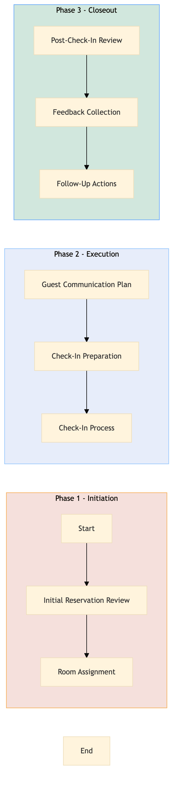

| Role | Steps |
|---|---|
| Revenue Manager | 1.1 |
| Front Desk Agent | 1.2 2.1 2.3 3.1 3.2 |
| Housekeeping Supervisor | 2.2 |
| Guest Services Manager | 3.3 |
| Step | Name | Role | System | Input | Output | KPI | Dec? | Exc? | Pain Point / Risk |
|---|---|---|---|---|---|---|---|---|---|
| 1.1 | Initial Reservation Review | Revenue Manager | Oracle OPERA Cloud | Group reservation details | Reservation confirmation | Less than 5 minutes per reservation | N | Y | Handling last-minute changes in group size or preferences |
| 1.2 | Room Assignment | Front Desk Agent | Oracle OPERA Cloud | Group reservation confirmation | Room assignment list | Less than 10 minutes per group | Y | N | Managing room availability during high-occupancy periods |
| 2.1 | Guest Communication Plan | Front Desk Agent | Marriott Bonvoy CRM, Book4Time | Room assignment list | Communication plan with check-in schedule | Less than 30 minutes per group | N | Y | Ensuring all guests receive accurate and timely information |
| 2.2 | Check-In Preparation | Housekeeping Supervisor | Oracle OPERA Cloud, Honeywell INNCOM | Room assignment list | Prepared rooms for check-in | Less than 20 minutes per room | Y | N | Maintaining a clean and comfortable environment for guests |
| 2.3 | Check-In Process | Front Desk Agent | Oracle OPERA Cloud, Assa Abloy VingCard | Guest identification documents | Checked-in guests with room keys | Less than 2 minutes per guest | N | Y | Handling lost or misplaced identification documents |
| 3.1 | Post-Check-In Review | Front Desk Agent | Oracle OPERA Cloud | Checked-in guests list | Check-in completion report | Less than 5 minutes per group | N | Y | Identifying and addressing any issues during the check-in process |
| 3.2 | Feedback Collection | Guest Services Manager | Marriott Bonvoy CRM, Salesforce | Check-in completion report | Guest feedback form | Less than 10 minutes per group | N | Y | Encouraging guests to provide timely and accurate feedback |
| 3.3 | Follow-Up Actions | Guest Services Manager | Marriott Bonvoy CRM, Book4Time | Guest feedback form | Action plan for improvements | Less than 15 minutes per group | Y | N | Implementing changes based on guest feedback |
The Group Check-In Coordination process ensures a smooth and efficient check-in experience for large groups at full-service Marriott hotels. This process involves coordinating with various departments to manage reservations, room assignments, and guest communications.